The same five moments in each: Home, the Stage, a hub, the Lens, the Reader · 390 × 844
No bar. The orb is the way in: the areas stand on its orbit, recents hang under it, a press opens the typed word, the Stage grows out of it. Light, not glass.
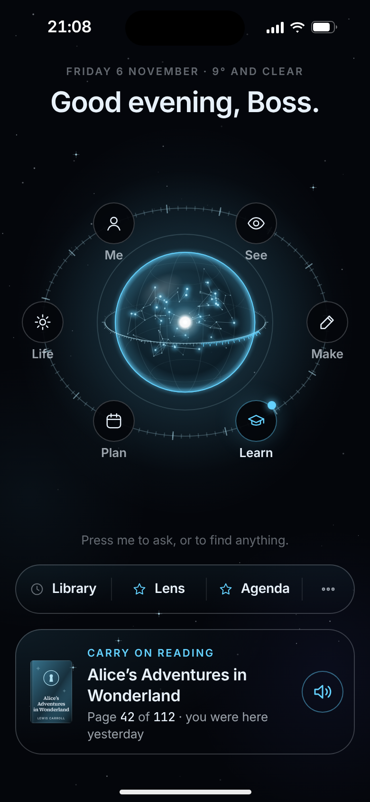
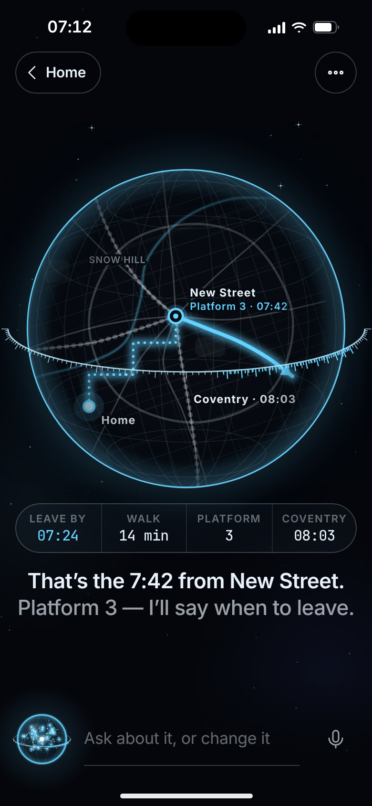
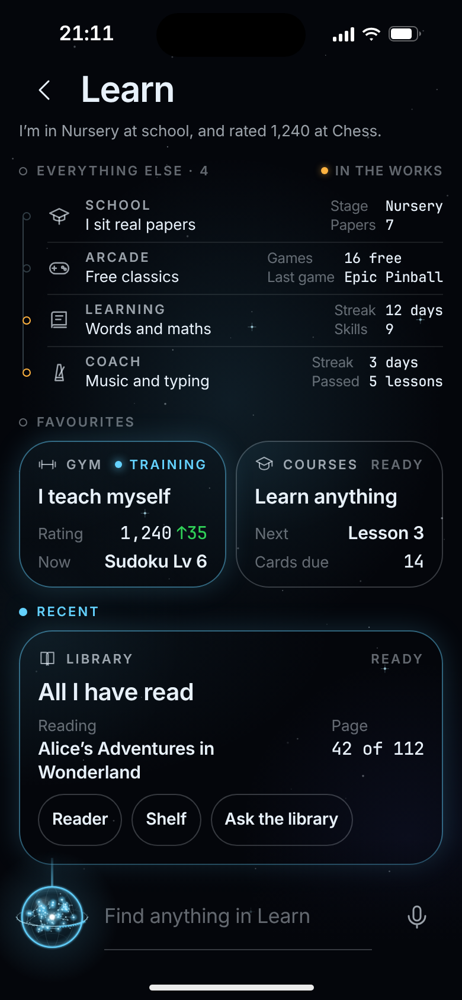
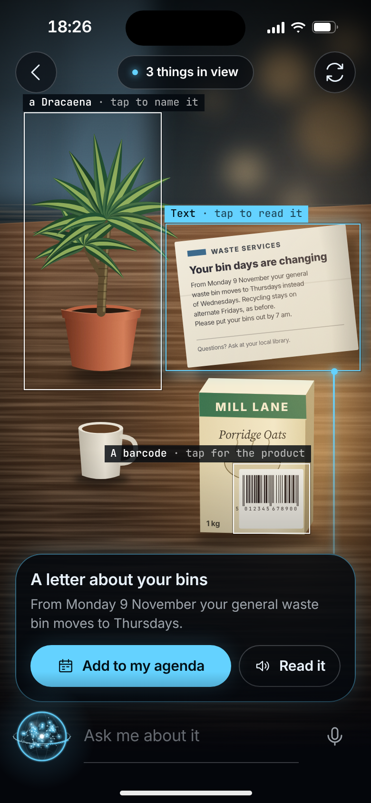
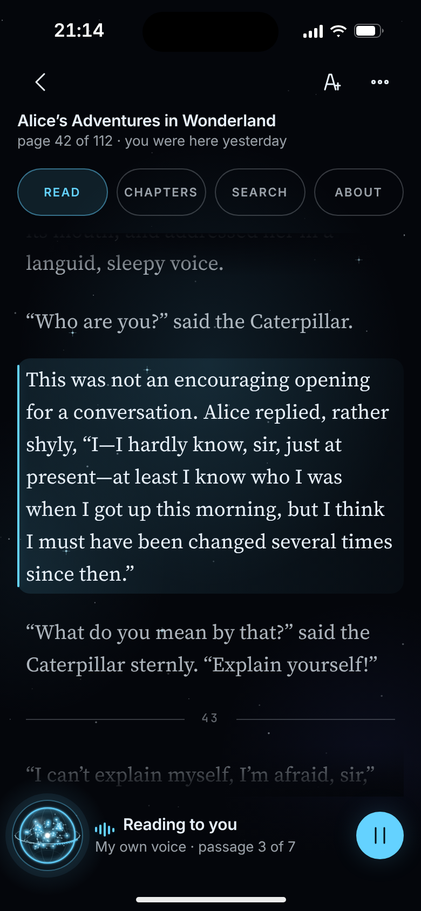
Nothing of today’s look: bone ink on warm black, a serif for my voice, rules instead of boxes, numbered layers. Mind is the one round, lit thing.
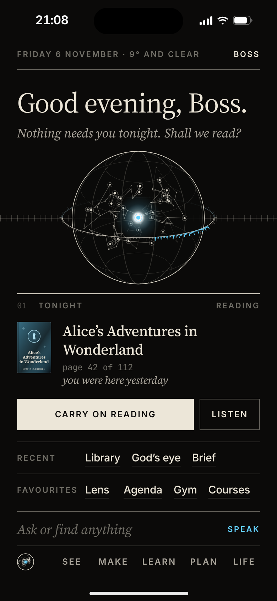
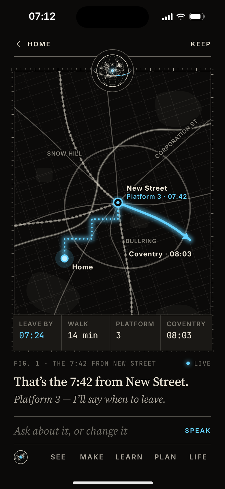
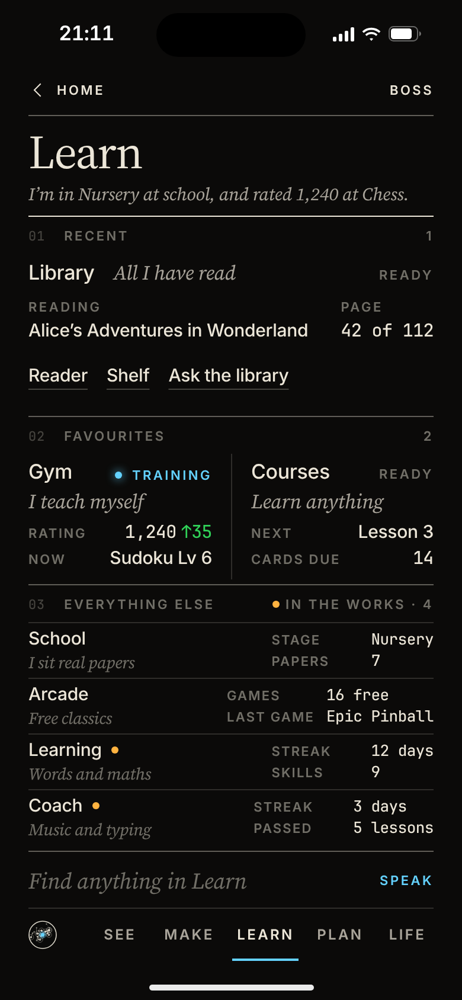
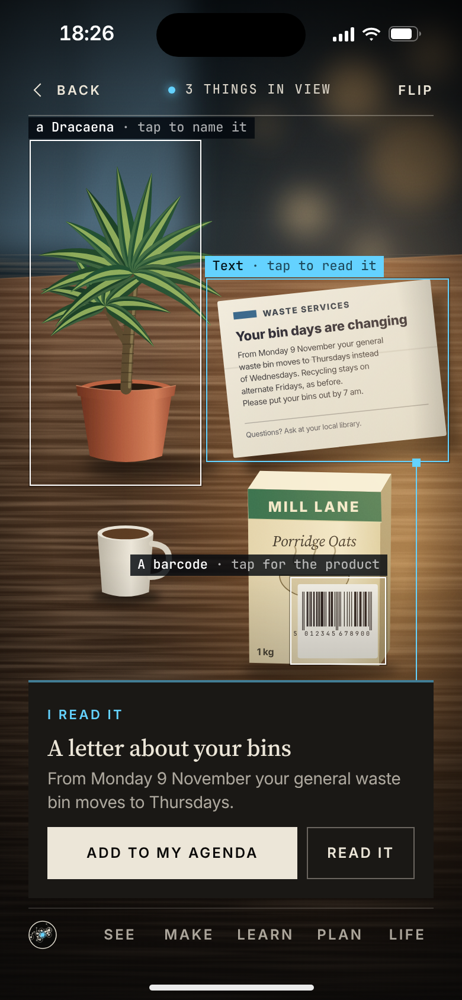
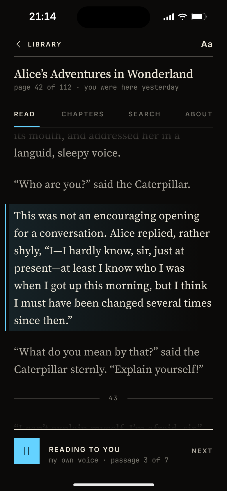
Route C’s glass and Mind kept. Less on each screen and more layers: one bar in place of two, hubs as layers, the Stage in the centre with Mind as its frame.
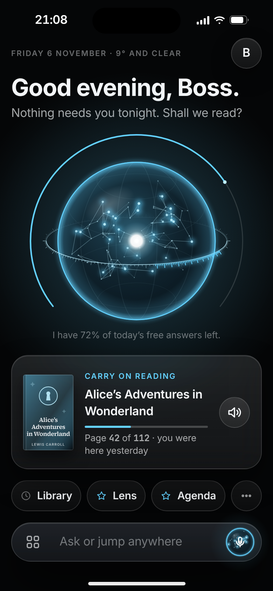
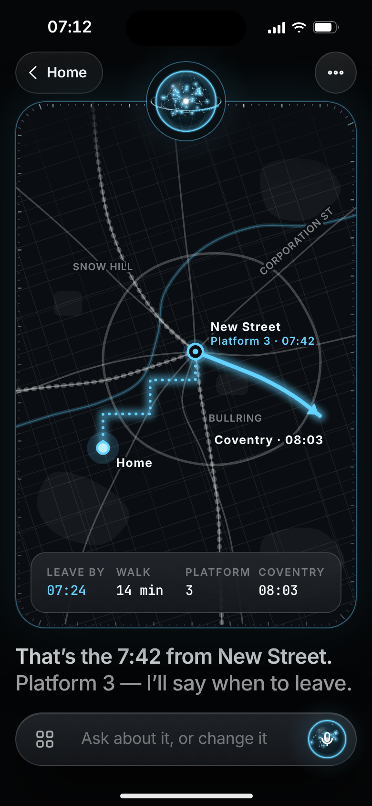
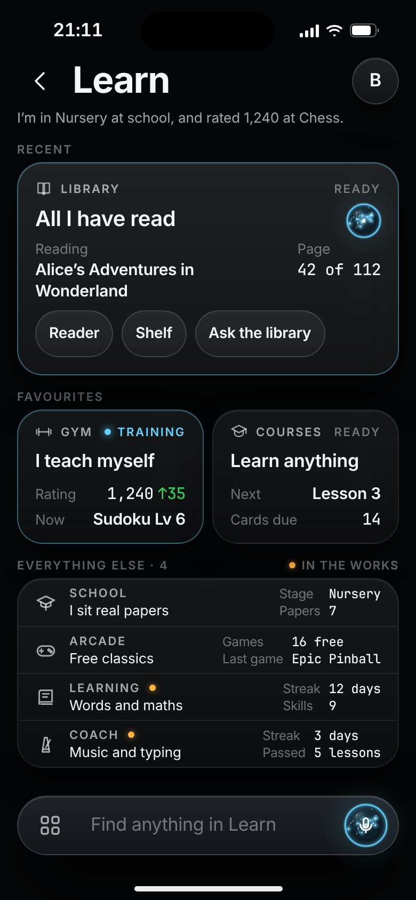
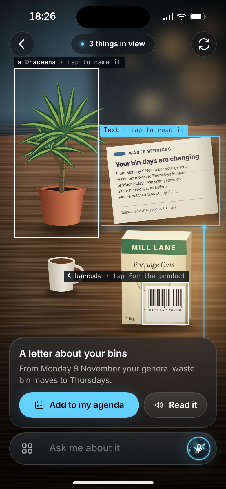
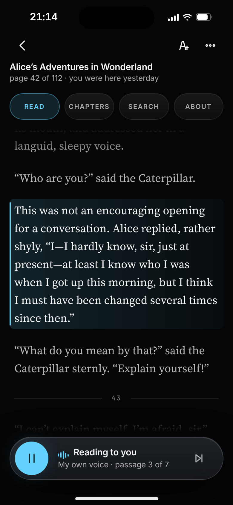